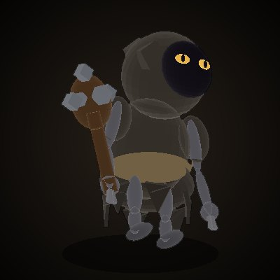
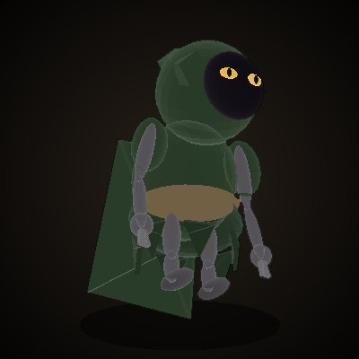
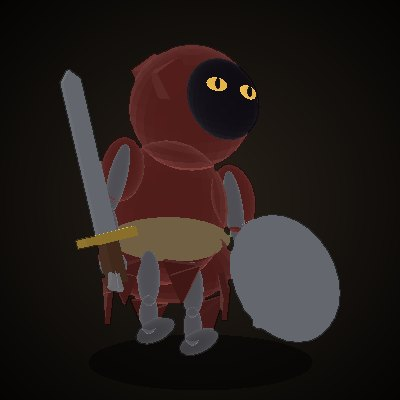

CHRONICLE ONLINE
크로니클 온라인 · 공식 정보
KO
EN
홈
새 소식
게임 가이드
인터페이스
데이터베이스
고유 시스템
커뮤니티
← 지역
용의 굴 1층
Lv 45~48 · 황금돛 영지
족쇄 망령
Lv 45 · HP 486 · 용의 굴 1층

굴 하인
Lv 46 · HP 505 · 용의 굴 1층
근위대 궁수
Lv 46 · HP 34,245 · 용의 굴 1층
근위대 병사
Lv 46 · HP 34,245 · 용의 굴 1층

굴 하인 궁수
Lv 47 · HP 524 · 용의 굴 1층
망자 파수꾼 근위대장
Lv 47 · HP 301,589 · 용의 굴 1층

굴 하인 전사
Lv 48 · HP 544 · 용의 굴 1층